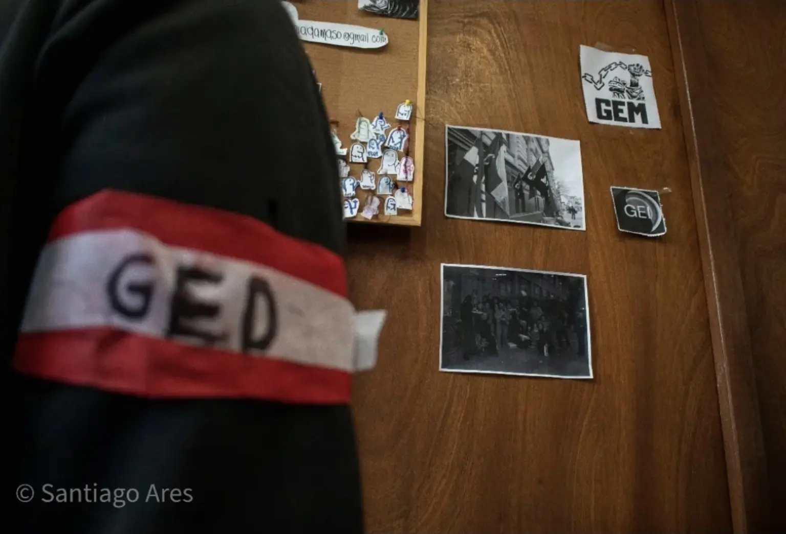

Nota de archivo. Esta cobertura fue realizada por Santiago Ares el 19 de mayo de 2023 y se incorpora al sitio de Archivo Popular en 2026. Las dos versiones conservadas del texto original fueron unificadas y corregidas ortográficamente sin modificar el sentido de las declaraciones.
Estudiantes ocuparon el viernes 19 de mayo de 2023 el Liceo Nº 3 Dámaso Antonio Larrañaga. La medida formó parte de una serie de movilizaciones impulsadas por gremios estudiantiles de Secundaria del área metropolitana.
Matías, uno de los voceros del Gremio Estudiantil del Dámaso (GED), describió así las condiciones del centro:
“El liceo se cae a pedazos por falta de presupuesto: se cae el revoque, está despintado y se encuentra sucio. Hay cinco auxiliares menos”.
“En el turno de la tarde hay una sola auxiliar para todo el liceo. El jueves pasado hicimos una recorrida con la inspectora para mostrarle las condiciones nefastas en las que se encuentra el edificio y se comprometieron a arreglarlo, pero seguimos esperando”, agregó.
Mauro, otro de los voceros, señaló un episodio ocurrido dentro de uno de los salones: “En el salón 20 hace poco se cayó una de las baldosas del techo; por suerte no había nadie. ¿Viste cuando el techo está suelto y se cae la arenilla?”.

Los estudiantes también denunciaron superpoblación en los grupos. “Estamos con sobrepoblación en las aulas, con 45 alumnos por clase; por ejemplo, Medicina 1 tiene 47 alumnos. Es un despropósito”, afirmaron. Asimismo, señalaron que “la mayoría de los baños están clausurados en todo momento”.
Según Matías, el liceo recibía 10.000 pesos del Estado y otros 10.000 por el alquiler mensual de la cantina. De ese monto debían salir gastos como vidrios, trancas, cortinas y productos de higiene.
“Con 20.000 pesos no se banca una casa, menos un liceo”.
Los estudiantes necesitan estudiar en condiciones adecuadas para acceder a una buena educación. Arriba los gurises.
Contexto reconstruido
La del 19 de mayo fue la segunda ocupación del Dámaso en ese mes. Además de las condiciones edilicias y de limpieza documentadas en esta cobertura, el gremio reclamaba un protocolo de seguridad, la intervención de un equipo multidisciplinario y una instancia de diálogo con las autoridades de Secundaria.
La ocupación se mantuvo hasta cerca de las 14:00, cuando la Policía comunicó a los estudiantes que debían retirarse. Los jóvenes desocuparon el edificio y, según la cobertura de la época, consiguieron coordinar una reunión con la entonces directora general de Secundaria, Jenifer Cherro. Días después, el gremio informó que esa reunión había sido cancelada.